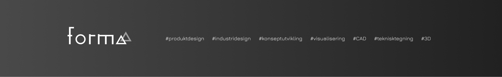

Designstudio i Oslo
Vi designer produkter

Formaa er et nytt designstudio i Oslo som hjelper gründere, startups og små og mellomstore bedrifter med å utvikle egne produkter og lansere dem i markedet. Vår primær kompetanse er industridesign, produktutvikling og branding. Vi bruker Design Thinking metodikken og utvikler konsepter og ideér ut i fra bedriftens mål med fokus på brukerens behov. Vi er engasjerende og initiativrike, og vil bruke vårt best kompetanse og erfaring til å hjelpe deg å lykkes med produktet ditt. Du får en strukturert prosess som kombinerer brukerinnsikt, produktstrategi, design og teknisk realisme.
Enten du trenger et komplett team eller ekstra kapasitet inn i et eksisterende prosjekt, kan vi tilpasse til dine nåværende og fremtidige mål ogbehov. Vi tilbyr raske iterasjoner og løsninger som kan testes og produseres. Se også prisestimat og galleriet vårt.
Gå til søknadsskjemaTjenester
Hva du får fra oss
Hvor mye vi gjør og når, avhenger av hvor dere står i prosjektet, hva som må være klart til når, og hva dere faktisk trenger hjelp til. Vi snakker rett fram om det hele veien: hva som er realistisk, hva som koster tid og penger, og hvor det gir mening at vi bidrar. Vi går ikke inn med en ferdig «pakke» som ikke passer — vi avklarer sammen hvor vi kan være nyttige ut fra det vi kan innen produktdesign, fra idé og konsept til detaljer, prototyper og det som skal videre til produksjon eller testing. Sammen med dere bestemmer vi hva som passer for dere.
Prosess
En tydelig metode for raskere fremdrift
Vi starter med å avklare behov, brukergrupper - en grunnlegende bruker- og markedsundersøkelse. Deretter utvikler vi kravspesifikasjon og suksesskriterier. Videre jobber vi med konsepter, skisser, mulige løsninger og form. Så ferdigstiller vi konseptet (i samarbeid med dere), velger retning og form for videre arbeid med realisering. Lager visuell identitet vis det trengs. Bygger prototyper og tester før dere låser store valg. Lager videreutviklingsplan, tekniske tegninger og planlegger produksjon.
Produktutviklingen er fordlet i klare faser som er relevante for noen og ikke andre. Det gir bra kontroll på tid, kost og kvalitet. Samtidig får dere et prosjektoppsett som er enkelt å følge for både ledelse, tekniske team og partnere.
Som designbyrå i Oslo jobber vi tett med kundeteam når fysisk samhandling er viktig, men har mulighet for digital samarbeid via software/app som passer best for dere.
FAQ
Vanlige spørsmål om designstudio i Oslo
1. Hva koster et designprosjekt?
Kostnad avhenger av kompleksitet, omfang og tidslinje. Vi setter opp en tydelig plan med prioriterte aktiviteter slik at dere kan starte med riktig nivå og skalere videre. Se gjerne vårt prisestimat for et raskt overslag.
2. Hvor lang tid tar det fra idé til prototype?
En første prototype kan ofte utvikles i løpet av få uker, mens et komplett produksjonsforløp normalt tar flere faser. Vi konkretiserer dette i oppstarten og bruker ofte prototyping og validering for å redusere risiko.
3. Jobber dere kun med selskaper i Oslo?
Nei. Vi leverer både i Oslo og nasjonalt. Prosjekter med behov for fysisk workshop kan kjøres lokalt, mens resten kan gjennomføres effektivt digitalt.
4. Kan dere gå inn i et prosjekt som allerede er i gang?
Ja. Vi kan bidra som spesialistressurs i deler av løpet eller ta ansvar for en hel fase, for eksempel konsept, designforbedring, prototyping eller validering.
5. Hvilke leveranser får vi underveis?
Dere får konkrete leveranser som beslutningsgrunnlag, konsepter, modeller, prototyper og anbefalinger for videre utvikling og produksjon. Du kan se eksempler i galleriet og på våre prosjektsider.
6. Hvordan starter vi et samarbeid?
Send en kort forespørsel via skjemaet. Vi tar en innledende samtale, avklarer mål og foreslår et praktisk oppsett for første fase. Du kan også lese mer om oss før du sender inn.